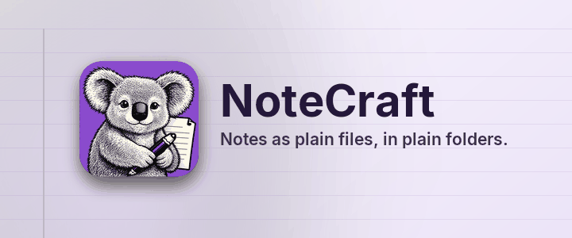

Notlar düz dosyalar olarak, düz klasörlerde.
NoteCraft notlarınızı dosyaları tuttuğunuz gibi tutar: bir defter bir klasördür, bir bölüm bir klasördür, bir sayfa ise içinde bir dosya ve resimleri olan bir klasördür. Hiçbir şey bir veritabanına kilitlenmez; eşitleme aracınızın zaten izlediği her klasör eşitlenen bir deftere dönüşür ve bir yedek de sadece bir kopyadır.
Bu bölümdeki her sayfa NoteCraft'ın bir parçasını sayfanın kendisinde gösterir:
Bu paragrafta herhangi bir yere tıklayıp yazın. Yazmayı bıraktıktan yaklaşık bir saniye sonra sayfa kendiliğinden kaydolur. Yeni bir paragraf için satırın sonunda Enter'a, satırdan çıkmak için Escape'e basın.
Başlangıç sayfasına dönün.
Bu sayfa bir yapay zekâ modeli tarafından çevrildi. Düzeltmeler memnuniyetle karşılanır.